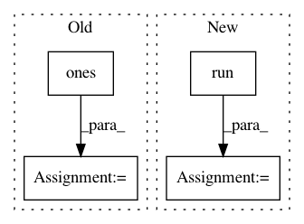

47c71c0524c7804863f2f4bcffdef5a873d84a55,txtgen/modules/connectors/connectors_test.py,TestConnectors,test_concat_connector,#TestConnectors#,97
Before Change
// pylint: disable=invalid-name
mu = tf.zeros(gauss_size)
var = tf.ones(gauss_size)
categorical_prob = [0.1, 0.2, 0.7]
categorical_ds = tfds.Categorical(probs = categorical_prob)
gauss_ds = tfds.MultivariateNormalDiag(loc = mu, scale_diag = var)
After Change
categorical_state = categorical_connector(categorical_ds)
constant_state = constant_connector(self._batch_size, value=1.)
with tf.Session() as debug_sess:
debug_cater = debug_sess.run(categorical_state)
state1 = concat_connector1([gauss_state, categorical_state, constant_state])
state2 = concat_connector2([gauss_state, categorical_state, constant_state])
In pattern: SUPERPATTERN
Frequency: 3
Non-data size: 4
Instances
Project Name: asyml/texar
Commit Name: 47c71c0524c7804863f2f4bcffdef5a873d84a55
Time: 2017-10-16
Author: junxianh2@gmail.com
File Name: txtgen/modules/connectors/connectors_test.py
Class Name: TestConnectors
Method Name: test_concat_connector
Project Name: freelunchtheorem/Conditional_Density_Estimation
Commit Name: f4c45be6554d717714d6ff5e67ab51bc4ea2e864
Time: 2019-05-02
Author: simonboehm@mailbox.org
File Name: tests/unittests_normalizing_flows.py
Class Name: TestMultiModal
Method Name: test_bi_modal_planar_chain
Project Name: freelunchtheorem/Conditional_Density_Estimation
Commit Name: f4c45be6554d717714d6ff5e67ab51bc4ea2e864
Time: 2019-05-02
Author: simonboehm@mailbox.org
File Name: tests/unittests_normalizing_flows.py
Class Name: TestMultiModal
Method Name: test_bi_modal_mixed_chain